1Instalar la app
DespensAPP es una aplicación web (PWA): se abre desde el navegador y se puede instalar como una app normal, sin tienda de aplicaciones. Una vez instalada funciona sin internet.
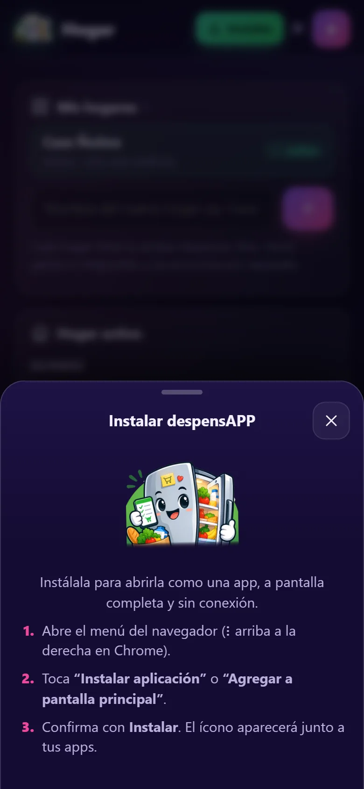
Botón “Instalar”
- Abre despensapp.web.app en el teléfono.
- Toca el botón verde Instalar de la barra superior (o la tarjeta “Instala DespensAPP” en Inicio).
- Android / Chrome: aparece el aviso del sistema; confirma con Instalar.
- iPhone / Safari: toca Compartir → Agregar a pantalla de inicio → Agregar.
¿Usabas la dirección anterior (despensapp-eb4a7.web.app)? Ábrela una vez y toca “Ir a despensapp.web.app con mis datos”; luego instala la app desde la nueva dirección.
Cuando la app ya está instalada, el botón desaparece. También encuentras “Instalar app” en la pestaña Hogar.
2Primeros pasos e Inicio
La primera vez se configura el hogar: nombre, quién eres, quién más vive contigo y el presupuesto mensual.
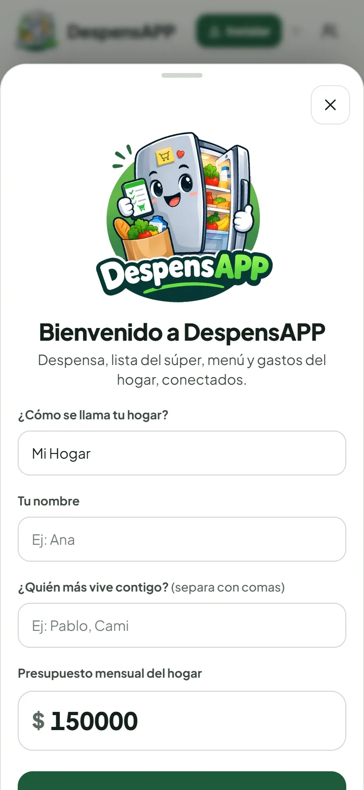
Bienvenida
- Escribe el nombre del hogar, tu nombre y el resto de los integrantes separados por comas.
- Define el presupuesto mensual (puedes cambiarlo después).
- Toca Empezar. Si quieres ver la app con datos, usa Probar con datos de ejemplo.
- ¿Te invitaron? Escribe el código del hogar y toca Unirme.
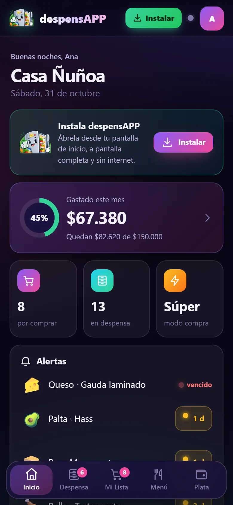
Pantalla de Inicio
- Anillo de presupuesto: cuánto se ha gastado en el período y cuánto queda.
- Accesos rápidos: productos por comprar, productos en despensa y el Modo Súper.
- Alertas: productos vencidos o por vencer (🟢 bien, 🟡 vence en menos de 5 días, 🔴 vencido) y productos bajo el mínimo.
- Próximas comidas y la bitácora con lo último que hizo cada integrante.
Si tienes más de un hogar, toca el nombre del hogar para cambiar de uno a otro.
3Despensa
Lo que hay en casa, con cantidades en varias unidades, fecha de vencimiento y stock mínimo.
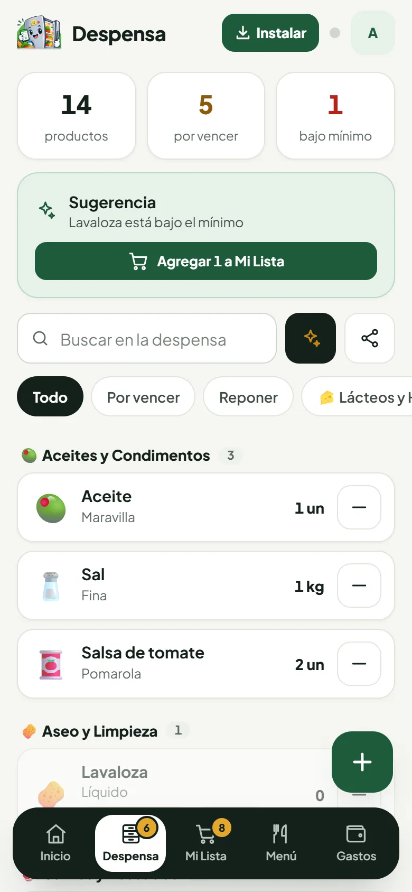
Ver y filtrar
- Arriba: total de productos, cuántos están por vencer y cuántos bajo el mínimo.
- La tarjeta Sugerencia agrega a la lista todo lo que bajó del mínimo con un toque.
- Busca por nombre o filtra por Por vencer, Reponer o categoría.
- El botón − de cada fila descuenta una porción rápida (con opción Deshacer).
- El ícono compartir genera el texto “Qué nos queda en casa”, “Por vencer” o “Faltantes” para WhatsApp, o como imagen.
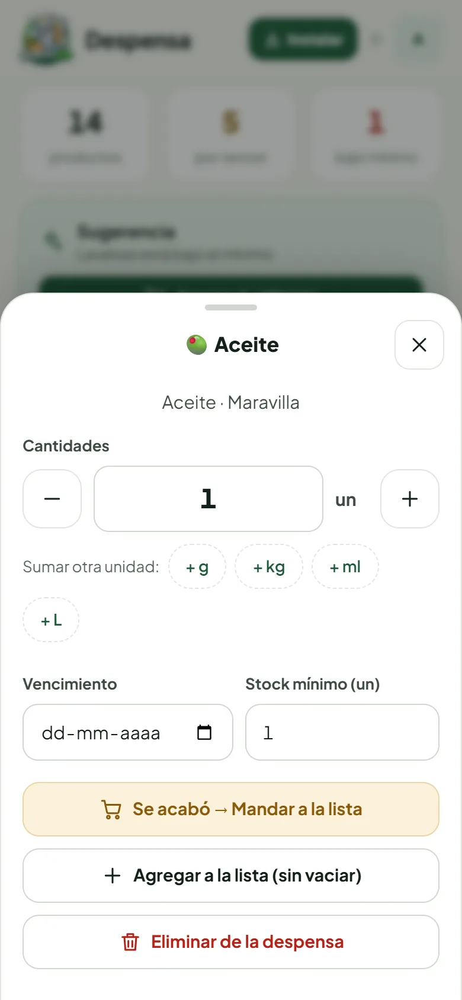
Editar un producto
- Ajusta la cantidad con − / + o escríbela. Puedes sumar otra unidad (ej: 1 L + 250 ml).
- Vencimiento activa el semáforo y las alertas.
- Stock mínimo: si baja de ese número, la app sugiere reponerlo.
- Se acabó → Mandar a la lista lo deja en cero y lo agrega a Mi Lista.
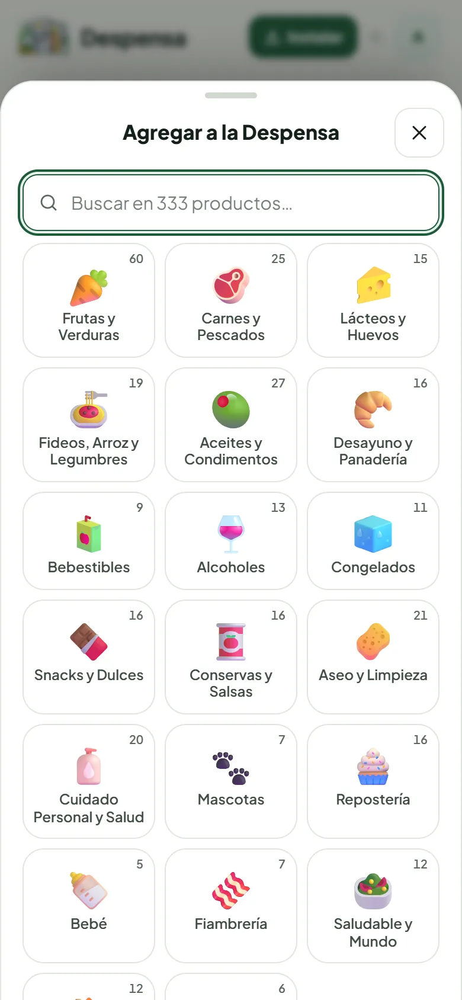
Agregar desde el catálogo
Toca el botón +. El catálogo tiene 20 categorías y más de 330 productos de supermercado chileno, cada uno con variantes (marca, formato, tipo).
- Busca por nombre o entra a una categoría.
- ¿No está? Usa Producto personalizado e indica si contiene gluten, lactosa, etc.
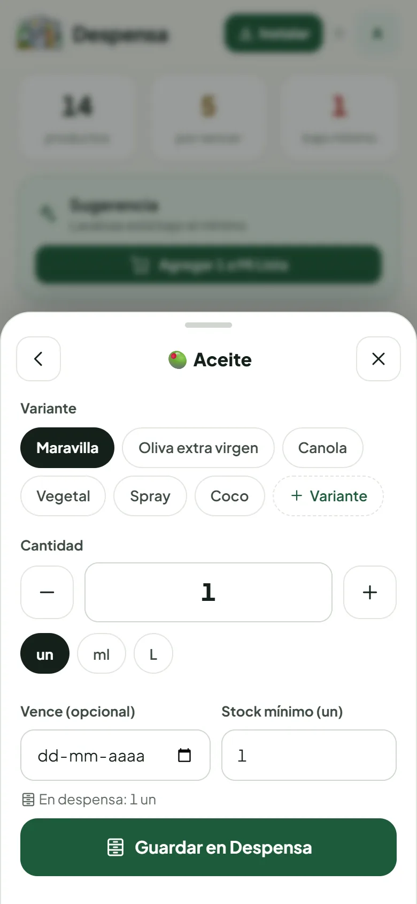
Variante, cantidad y unidad
- Elige la variante (o crea una con + Variante).
- Indica la cantidad y la unidad (un, g, kg, ml, L).
- Opcional: vencimiento y stock mínimo.
- Si el producto no es apto para alguien de la casa, aparece un aviso.
4Mi Lista y Modo En el Súper
Planifica la compra en casa y úsala como calculadora en el pasillo.
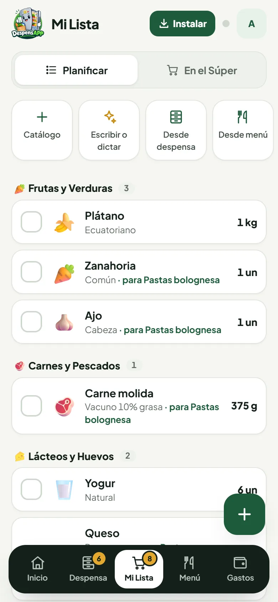
Planificar
- Agrega desde el Catálogo, Desde despensa (lo que se acabó primero) o Desde menú (solo lo que falta para las recetas agendadas).
- Cada producto muestra la cantidad exacta y su origen (ej: “para Pastas bolognesa”).
- Si ya hay algo en casa, lo indica en celeste. Los avisos de dieta y salud aparecen bajo el producto.
- Compartir envía la lista por WhatsApp.
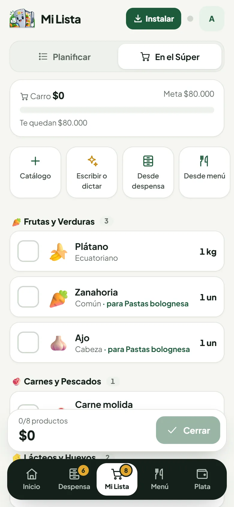
En el Súper
- El termómetro compara el carro con el presupuesto por compra: verde, amarillo (más del 80 %) y rojo cuando te pasas.
- La barra inferior suma el carro en tiempo real.
- Toca un producto para registrar el precio real.
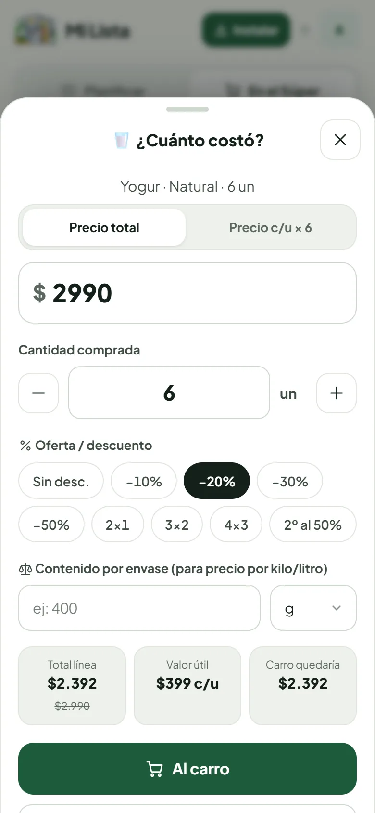
¿Cuánto costó?
- Ingresa el precio total o el precio por unidad.
- Aplica ofertas: −10 % a −50 %, 2×1, 3×2, 4×3 o 2º al 50 %.
- Con el contenido del envase calcula el valor útil ($/kg o $/L).
- “Carro quedaría” muestra cómo queda el total antes de confirmar.
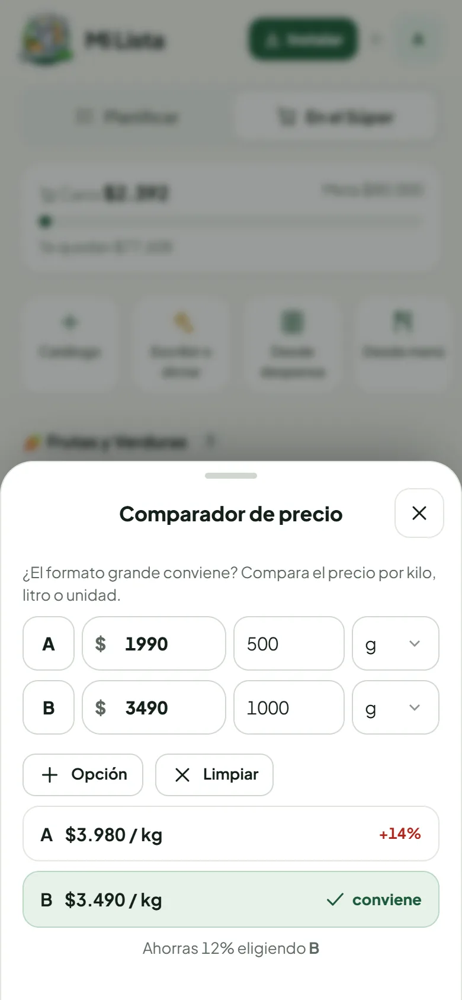
Comparador de formatos
¿Conviene el formato grande? Ingresa precio y contenido de dos o más opciones y la app marca la más barata por kilo, litro o unidad, con el porcentaje de ahorro.
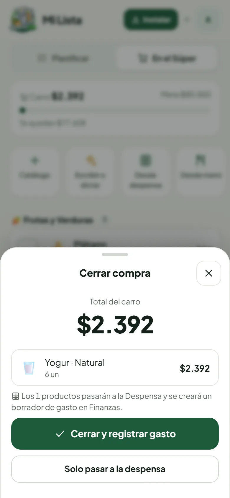
Cerrar la compra
- Toca Cerrar cuando termines.
- Los productos comprados pasan automáticamente a la Despensa.
- Con Cerrar y registrar gasto se crea un borrador de gasto con el total y el detalle, listo para adjuntar la boleta.
6Dietas, alergias y salud
Cada integrante puede tener dietas, alergias, condiciones de salud y alimentos que no puede comer. La app los usa en la lista, el catálogo y las recetas.
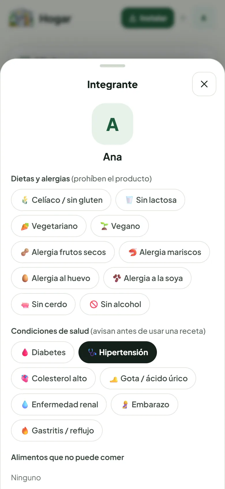
Configurar a un integrante
En Hogar → Integrantes, toca a la persona:
- Dietas y alergias (prohíben el producto): celíaco, sin lactosa, vegetariano, vegano, frutos secos, mariscos, huevo, soya, sin cerdo, sin alcohol.
- Condiciones de salud (avisan antes de usar una receta): diabetes, hipertensión, colesterol alto, gota, enfermedad renal, embarazo, gastritis.
- Alimentos que no puede comer: busca y agrega productos puntuales (ej: palta, cilantro).
| Condición | Avisa por |
|---|---|
| Hipertensión / renal | Productos altos en sodio (sal, caldos, embutidos, salsa de soya, snacks, conservas) |
| Colesterol / gastritis | Grasas saturadas (mantequilla, crema, embutidos, frituras) |
| Gota | Mariscos, vísceras, sardinas y alcohol |
| Diabetes | Azúcar (prohíbe) y miel (precaución) |
| Embarazo | Alcohol (prohíbe) y crudos o curados (sushi, ahumados, salame) |
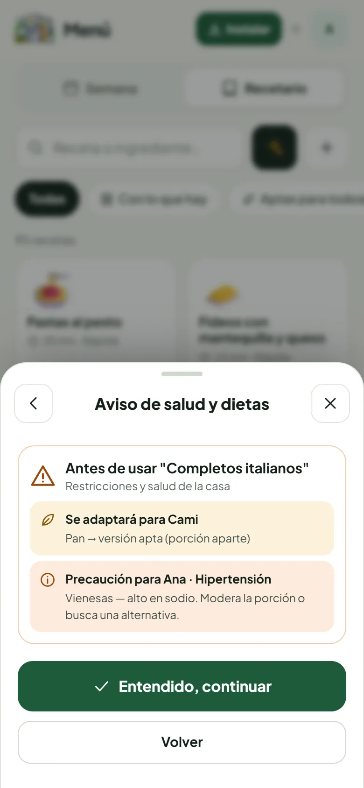
Aviso antes de usar una receta
Al agendar, mandar faltantes o cocinar una receta con algún problema, aparece este aviso:
- Rojo: alguien no puede comerla y no hay alternativa (o elegiste “Sin adaptar”).
- Amarillo: se adaptará con una versión apta (ej: pan sin gluten para Cami).
- Naranja: precaución por una condición de salud (ej: vienesas altas en sodio para Ana).
Toca Entendido, continuar para seguir o Volver para elegir otra receta.
Los avisos son una ayuda para organizarse y no reemplazan la indicación de un médico o nutricionista.
7Gastos: presupuesto, boletas y cuentas claras
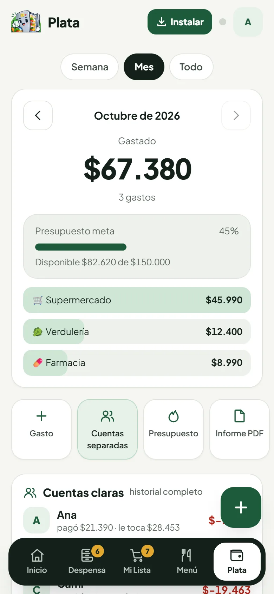
Resumen
- Elige Semana, Mes o Todo y navega entre períodos.
- El termómetro compara lo gastado con el presupuesto meta; debajo, el gasto por categoría.
- Cuentas claras: cuánto pagó cada uno, cuánto le corresponde y quién le debe a quién. Saldar registra la transferencia.
- Exporta el Informe PDF (con resumen, detalle, firmas y fotos de boletas), un CSV para Excel o una imagen.
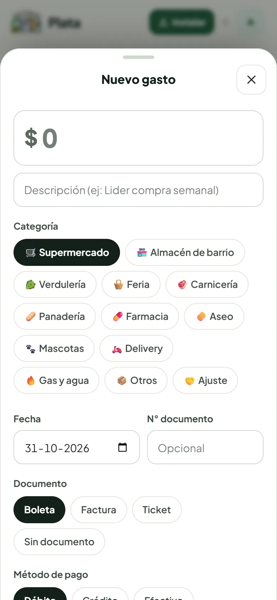
Registrar un gasto
- Monto, descripción y categoría (supermercado, feria, farmacia, etc.).
- Fecha, tipo y número de documento, y método de pago.
- ¿Quién pagó? y Repartir entre (todos o solo algunos).
- Adjunta la foto de la boleta con la cámara o la galería. Con internet, Leer total desde la boleta intenta detectar el monto.
Para repartir una boleta por productos o con aportes de varias personas, toca Dividir en el recuadro verde “Cuentas separadas” del mismo gasto.
PDFBoletas digitales (PDF y Word)
Las boletas electrónicas que llegan por correo o se descargan del súper, la farmacia o el SII se pueden adjuntar tal cual, sin sacarles foto.
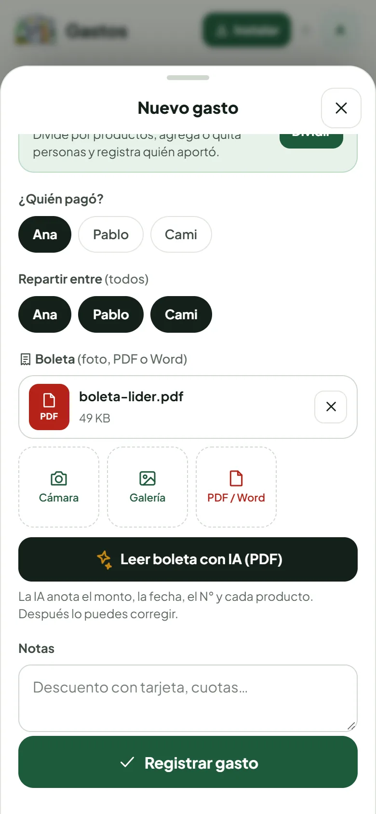
Adjuntar un PDF o Word
- En el gasto, sección Boleta, toca PDF / Word y elige el archivo (desde Descargas, Drive o el correo).
- Queda como una tarjeta con su nombre y tamaño. Puedes adjuntar varios y mezclarlos con fotos.
- También funciona en Cuentas separadas y en Despensa → ✦ → Boleta digital.
- Con Leer boleta con IA se completan el monto, la fecha, el N° y los productos, igual que con una foto.
Formatos: PDF y Word .docx (hasta 10 MB). Los .doc antiguos no se pueden leer: guárdalos como .docx o PDF.
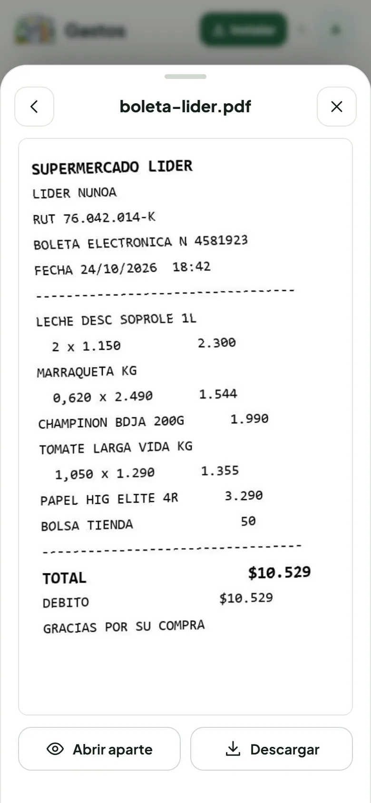
Ver, descargar y respaldar
- Toca la tarjeta para ver la boleta dentro de la app (también sin internet). Los Word se muestran como texto.
- Abrir aparte abre el PDF en el visor del teléfono; Descargar guarda una copia.
- En un hogar compartido los archivos de hasta ~700 KB se comparten con todos; los más grandes quedan solo en el teléfono donde se subieron (se avisa al adjuntarlos).
- El Informe PDF incluye las boletas digitales en el anexo: los PDF como imagen de sus páginas y los Word como texto.
$Cuentas separadas
Divide una boleta por persona: quién consumió qué, quién puso cuánta plata, e incluso personas que no viven en la casa (una visita, un amigo). Todo es editable y la boleta queda como respaldo.
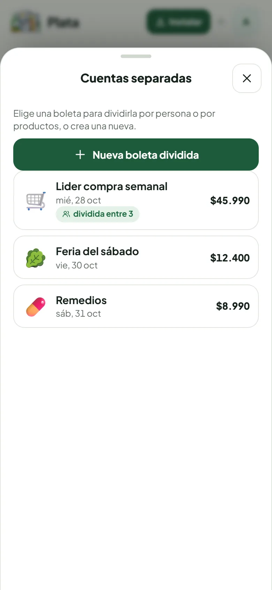
Dónde está
- En Gastos, botón verde Cuentas separadas: elige una boleta del historial o crea una Nueva boleta dividida.
- Dentro de cualquier gasto del historial, recuadro Cuentas separadas → Dividir (o Editar si ya está dividida).
- Las boletas divididas muestran la etiqueta dividida en Movimientos.
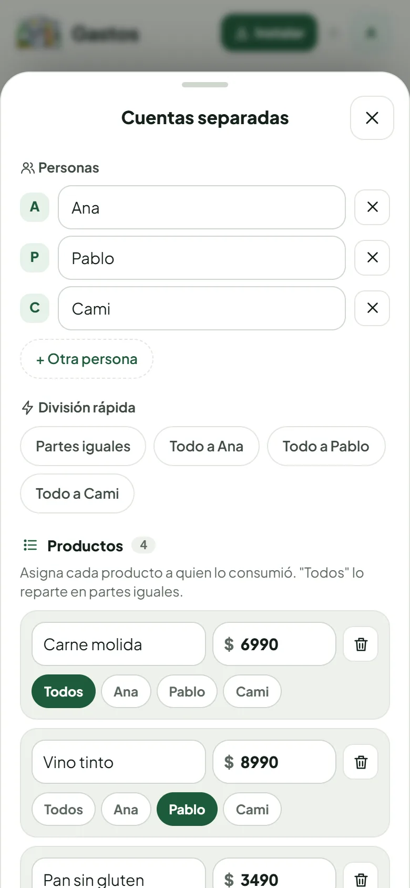
Dividir paso a paso
- Boleta de respaldo: arriba aparece la foto (o puedes sacarla en ese momento). Con Ver boleta mientras divido queda visible para copiar los precios.
- Personas: parten los integrantes del gasto. Cambia cualquier nombre tocándolo, quita con × o suma a alguien con + Otra persona.
- Productos: escribe nombre y precio (si la boleta viene de una compra del súper, se cargan solos). Toca los nombres bajo cada producto para asignarlo; Todos lo reparte en partes iguales.
- División rápida: Partes iguales o Todo a… una persona, con un toque.
- Lo que no asignes a productos (bolsas, redondeo, etc.) queda como resto de la boleta y se reparte entre quienes elijas.
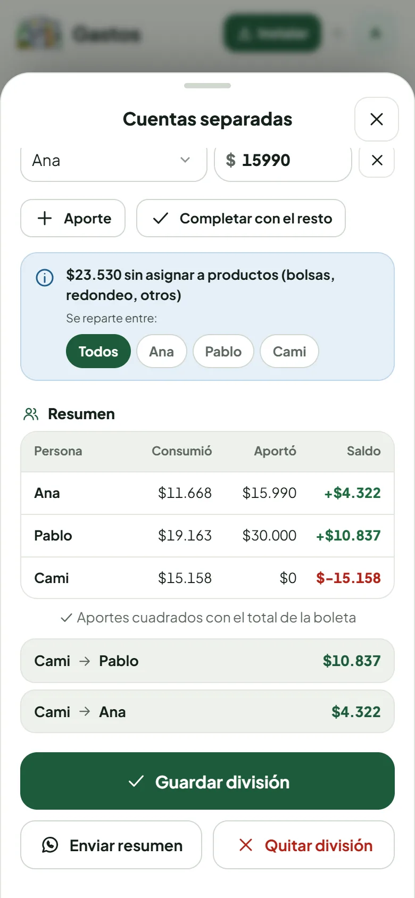
Quién pagó y resumen
- Quién pagó: agrega un Aporte por cada persona que puso plata. Completar con el resto ajusta el último aporte para que cuadre con el total.
- El resumen muestra cuánto consumió y aportó cada uno, su saldo y las transferencias para quedar a mano.
- Guardar división actualiza automáticamente Cuentas claras (incluye a las visitas mientras tengan saldo pendiente).
- Enviar resumen lo comparte por WhatsApp; Quitar división vuelve al reparto normal del gasto.
- El Informe PDF y el CSV incluyen el detalle de cada boleta dividida.
✦Funciones con IA
La inteligencia artificial solo lee y propone: boletas, fotos de la despensa, listas escritas o dictadas y recetas. Todo aparece en una pantalla de revisión para corregir antes de guardar, y los cálculos (cuentas claras, cuentas separadas, dietas, despensa) los sigue haciendo la app. Los botones de IA tienen un ícono de destello ✦.
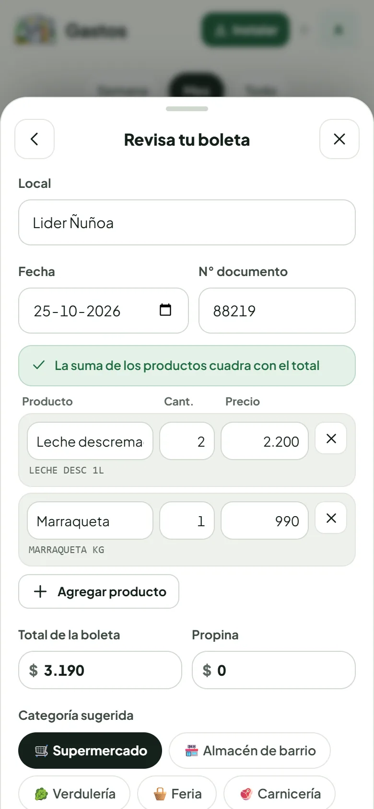
Leer boleta con IA
- En un gasto: botón “Leer boleta con IA” (o “Foto y leer boleta con IA” si aún no tiene foto).
- En Cuentas separadas: al sacar la foto o adjuntar el PDF/Word de la boleta se lee sola y carga los productos para repartir.
- Funciona con fotos, PDF y Word: el PDF se convierte en imagen en el teléfono y del Word se envía solo su texto.
- La IA anota el local, fecha, N° de documento, total, propina y cada producto con cantidad y precio, y escribe claros los nombres abreviados (“LECHE DESC 1L” → “Leche descremada 1 L”).
- Sugiere la categoría y un detalle corto.
- La app comprueba si la suma de los productos cuadra con el total (verde) o muestra la diferencia (amarillo).
- Opcional: Guardar productos en la despensa, eligiendo cuáles y a qué producto del catálogo corresponde cada uno.
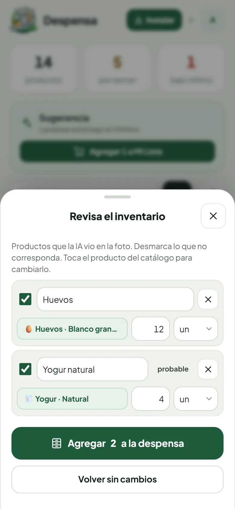
Despensa con IA
En Despensa, el botón ✦ junto al buscador ofrece dos opciones:
- Boleta del súper: pasa lo comprado a la despensa y, si quieres, registra el gasto con la boleta de respaldo.
- Foto del refri o la despensa: la IA reconoce los productos que se ven y propone el inventario. Los dudosos vienen desmarcados.
Toca el recuadro celeste de cada fila para cambiar el producto del catálogo; si no hay coincidencia aparece en amarillo “Elegir producto”.
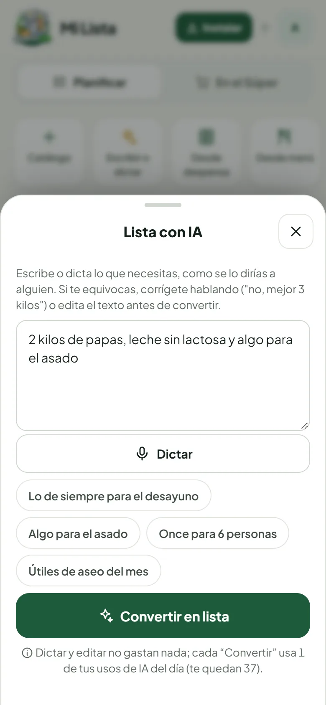
Lista escrita o dictada
- En Mi Lista toca Escribir o dictar.
- Escribe como le hablarías a alguien, o toca Dictar y habla (“2 kilos de papas, leche sin lactosa y algo para el asado”).
- Si pides algo general (“algo para el asado”), la IA propone productos típicos marcados como sugerido.
- Revisa cantidades y productos, y toca Agregar a Mi Lista.
¿Te enredaste? Corrígete hablando, como con una persona: “2 kilos de papas, no, mejor 3”, “leche… no, olvida la leche” o “arroz, digo, fideos”. La IA se queda con tu última decisión. También puedes editar el texto antes de convertir, o tocar Corregir el texto y convertir de nuevo desde la revisión.
¿Gasta? Dictar y editar el texto lo hace el teléfono y no usa la IA. Solo cada vez que tocas Convertir se usa 1 de tus 40 usos diarios. Todo es gratis.
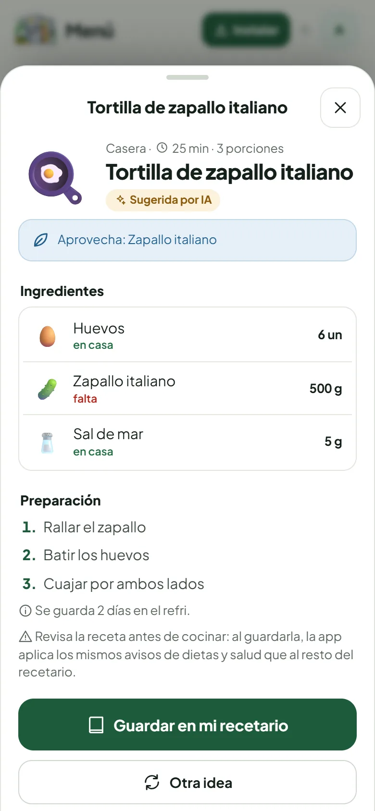
Chef IA
- Ábrelo desde Menú (botón ✦ del recetario o “Chef IA: ¿qué cocino con lo que hay?”) o desde las Alertas de Inicio cuando algo está por vencer.
- Elige personas, tiempo y, si quieres, lo que se te antoja. Propone una receta casera que prioriza lo que vence y respeta las dietas, alergias y condiciones de salud de la casa.
- Muestra qué ingredientes tienes y cuáles faltan. Con Guardar en mi recetario queda como receta propia: desde ahí puedes agendarla, mandar los faltantes a la lista o cocinarla, con los mismos avisos de salud de siempre.
- Otra idea pide una receta distinta.
- En “¿Qué se te antoja?” también puedes tocar Dictar; si cambias de idea al hablar (“algo con pollo, no, mejor sin carne”), se respeta lo último que dijiste.
Privacidad, costo y límites
- Solo se envía la foto o el texto de esa acción (y, para el Chef IA, la lista de productos y las restricciones de la casa) a un intermediario propio. La clave de la IA no está en la app ni en GitHub.
- Se usa el plan gratuito de Google Gemini, con respaldo en Cloudflare Workers AI. En el plan gratuito Google puede usar lo enviado para mejorar sus productos; las boletas traen pocos datos personales.
- Límite de 40 usos de IA por persona al día. En Hogar → Inteligencia artificial ves cuántos te quedan y puedes desactivar las funciones de IA.
- Necesita internet. Sin conexión, todo lo demás sigue funcionando.
GCuenta de Google y respaldo
Conectar tu cuenta de Google es opcional y no cambia nada de lo que ya tienes: tus hogares, despensa, listas y gastos siguen en el teléfono. Lo que ganas es un respaldo automático para recuperarlo todo si cambias o pierdes el teléfono.
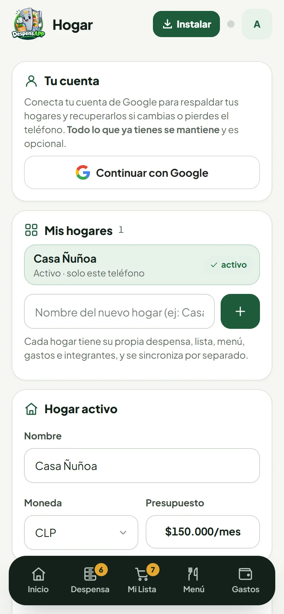
Conectar tu cuenta
- Entra a Hogar (botón con tu inicial, arriba a la derecha).
- En Tu cuenta, toca Continuar con Google y elige tu cuenta.
- Listo: la app sigue igual, con todos tus datos, y empieza a respaldarlos.
Tu uso anterior de la app se convierte en tu cuenta de Google: no se crea un usuario nuevo ni se borra nada. Tus hogares compartidos y tus usos de IA siguen igual.
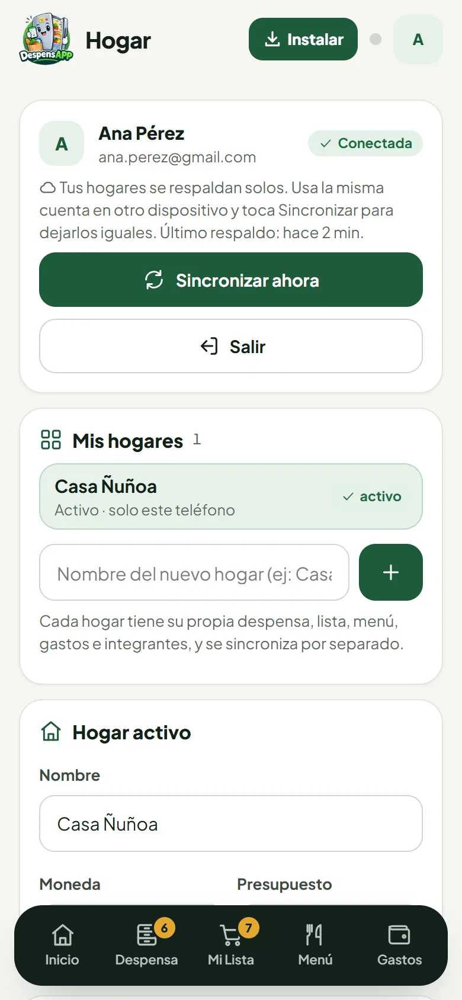
Respaldo y teléfono nuevo
- Con la cuenta conectada, cada hogar se respalda solo unos segundos después de cada cambio. También puedes tocar Respaldar ahora.
- Teléfono nuevo: en la bienvenida toca ¿Ya usas DespensAPP? Entra con Google y se recuperan todos tus hogares.
- Si el teléfono ya tenía datos, se combinan: nunca se borra nada, y recuperar dos veces no duplica.
- Salir (cerrar sesión) deja todo en el teléfono; puedes volver a conectar cuando quieras.
El respaldo es personal: solo tú puedes ver los hogares guardados en tu cuenta. Los hogares compartidos se siguen compartiendo con su código como siempre.
8Hogares, sincronización y bitácora
Varios hogares
Puedes tener más de un hogar (por ejemplo, tu casa y la casa de la playa, o la casa de tus padres). Cada uno tiene su propia despensa, lista, menú, gastos, integrantes y código de sincronización.
- Crear: escribe el nombre en “Mis hogares” y toca +.
- Cambiar: toca el hogar en la lista, o su nombre en Inicio.
- Eliminar: ícono de basurero (dos toques). Solo se borra de este teléfono.
Hogar compartido
- En el hogar activo toca Crear hogar compartido: aparece un código de 6 letras y un QR.
- Los demás integrantes tocan Unirme con el código o Escanear QR.
- Desde ese momento todos ven la despensa, la lista y los gastos en tiempo real, con avisos cuando alguien hace un cambio.
Si te unes a un hogar mientras el actual ya tiene datos, la app crea un hogar nuevo para no mezclar despensas.
Cualquiera que tenga el código puede ver y editar ese hogar: compártelo solo con quienes viven contigo.
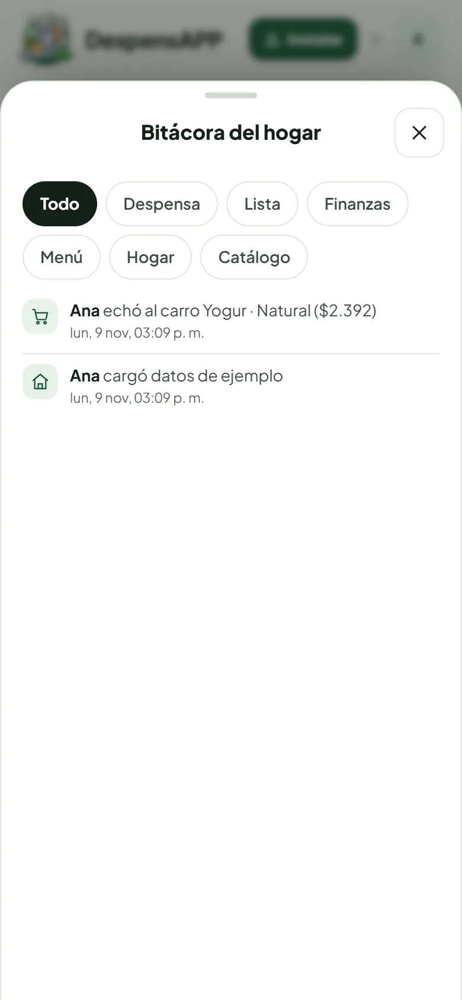
Bitácora
Registro automático de lo que hace cada integrante (“Ana echó al carro Yogur”, “Pablo registró una boleta de $34.500”), filtrable por Despensa, Lista, Finanzas, Menú, Hogar y Catálogo.
Respaldo
En Hogar puedes exportar todos los datos a un archivo JSON e importarlo en otro teléfono (se combina con lo que ya hay).
◐Apariencia: modo claro y oscuro
La app tiene un diseño claro (verde de la marca, tarjetas blancas) y uno oscuro (carbón con acento lima). Los emojis de productos, categorías y recetas se mantienen en ambos para reconocer todo de un vistazo.
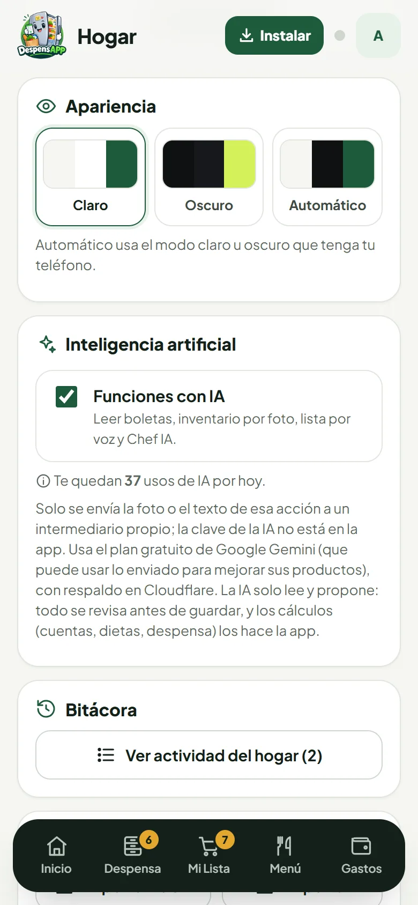
Cambiar la apariencia
- Ve a Hogar (botón con tu inicial, arriba a la derecha).
- En Apariencia elige Claro, Oscuro o Automático.
- Automático sigue el modo claro u oscuro que tenga configurado tu teléfono (por ejemplo, oscuro de noche).
La elección es por teléfono: cada integrante del hogar puede usar la que le acomode.
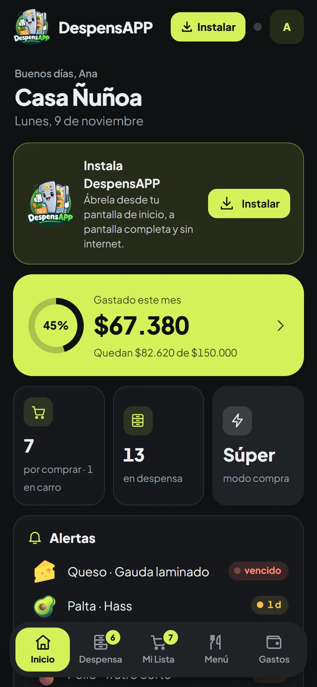
Modo oscuro
Mismas pantallas y funciones, con fondo carbón y un solo color de acento. Cansa menos la vista de noche y ahorra batería en pantallas OLED.
?Preguntas frecuentes
Si dicto la lista y me equivoco, ¿qué pasa?
La IA entiende correcciones habladas (“no, mejor…”, “olvida…”, “digo…”) y usa tu última decisión. Antes de agregar nada siempre ves la lista para corregir cantidades, quitar productos o volver al texto. Dictar no gasta usos de IA; solo cada “Convertir”.
Si conecto Google, ¿pierdo lo que ya tenía?
No. Tu uso anterior se convierte en tu cuenta de Google y los datos se quedan en el teléfono; además se respaldan. Si recuperas en un teléfono que ya tenía datos, todo se combina.
¿Es obligatorio usar Google?
No. Puedes seguir usando la app como siempre. Sin cuenta conectada tus datos solo están en tu teléfono (y en el hogar compartido, si usas uno).
¿Funciona sin internet?
Sí. Todo se guarda en el teléfono. Si el hogar es compartido, los cambios se sincronizan al recuperar la conexión. Solo la lectura automática de boletas necesita internet.
¿Dónde quedan las fotos de las boletas?
En el teléfono, comprimidas. En un hogar compartido también se suben para que los demás las vean.
Cambié algo y otro integrante también, ¿se pierde algo?
No. La app combina los cambios producto por producto y gasto por gasto; si dos personas editan el mismo producto, queda el último cambio.
No encuentro un producto en el catálogo
Búscalo y toca “Crear producto…”, o agrega una variante nueva a un producto existente. Quedan disponibles para todo el hogar.
¿Cómo veo la versión nueva cuando hay una actualización?
La app avisa con “Nueva versión disponible”; toca Actualizar. Si no aparece, cierra y vuelve a abrir la app.
★Novedades
Versión 2.2.1 — 2 de noviembre de 2026
- Video tutorial de 7 minutos con voz y subtítulos, al inicio de este manual y en Hogar → Ver video tutorial. Enlace para compartir: despensapp.web.app/video.
Versión 2.2.0 — 1 de noviembre de 2026
- Cuenta de Google opcional con respaldo automático de los hogares y recuperación en un teléfono nuevo. El uso anterior se convierte en la cuenta: no se pierde nada.
- La app conserva la sesión al reabrirla (antes iniciaba una nueva cada vez).
Versión 2.1.2 — 1 de noviembre de 2026
- El logo completo (sin recortes ni bordes) aparece en la barra superior, en la tarjeta de instalar y en el ícono de la pestaña.
Versión 2.1.1 — 1 de noviembre de 2026
- El nombre de la app se escribe DespensAPP en todas las pantallas, el manual y el ícono instalado.
Versión 2.1.0 — 1 de noviembre de 2026
- La sección Plata ahora se llama Gastos.
- La IA entiende correcciones al dictar (“no, mejor 3 kilos”, “olvida la leche”).
- Botón Corregir el texto y convertir de nuevo en la revisión de la lista; dictado también en el Chef IA.
- Se indica cuántos usos de IA quedan y que dictar no gasta.
Versión 2.0.0 — 1 de noviembre de 2026
- Diseño nuevo: más sobrio y profesional, con el verde de la marca, tarjetas blancas, tipografía Plus Jakarta Sans (funciona sin internet) y barra inferior oscura. Se mantienen los emojis de productos y recetas.
- Modo oscuro opcional y modo automático según el teléfono (Hogar → Apariencia).
- Mejor contraste de textos y avisos; corregida la forma del contador "por vencer" de la Despensa.
- Manual con el mismo estilo de la app.
Versión 1.4.0 — 31 de octubre de 2026
- Boletas digitales: adjunta PDF y Word (.docx) en gastos, Cuentas separadas y Despensa, con visor dentro de la app, descarga y sincronización con el hogar.
- La IA también lee boletas en PDF y Word.
- El Informe PDF anexa las boletas digitales.
Versión 1.3.0 — 26 de octubre de 2026
- Funciones con IA (siempre con revisión antes de guardar): leer boletas en gastos y Cuentas separadas, pasar una boleta del súper a la despensa, inventario desde una foto del refri, lista de compras escrita o dictada y Chef IA con lo que está por vencer.
- Intermediario propio en Cloudflare con verificación de sesión y límite diario; Gemini con respaldo en Workers AI.
- Opción para desactivar la IA en Hogar. Se retiró el lector de boletas anterior (Tesseract).
Versión 1.2.0 — 26 de octubre de 2026
- Nuevo módulo Cuentas separadas en Gastos: dividir una boleta por productos y personas, con nombres y precios editables, personas externas al hogar, aportes de varios pagadores y la boleta como respaldo.
- Cuentas claras, el Informe PDF y el CSV consideran las boletas divididas.
Versión 1.1.1 — 18 de octubre de 2026
- Nueva dirección: despensapp.web.app. La dirección anterior muestra un aviso con el botón “Ir a despensapp.web.app con mis datos”, que traslada todos tus hogares; los enlaces de invitación se redirigen solos.
Versión 1.1.0 — 18 de octubre de 2026
- Nuevo logo e íconos de la app.
- Botón Instalar en la barra superior, en Inicio y en Hogar (con instrucciones para iPhone).
- Catálogo ampliado con categorías de supermercados chilenos: de 223 a 333 productos, nueva categoría Comidas preparadas.
- Condiciones de salud por integrante (hipertensión, diabetes, colesterol, gota, renal, embarazo, gastritis) y alimentos prohibidos puntuales.
- Aviso previo antes de agendar, comprar o cocinar una receta con restricciones.
- Varios hogares en el mismo teléfono, cada uno con su propia despensa y sincronización.
- Manual de uso con capturas.
- Corrección: el botón atrás ya no puede sacarte de la app al cerrar y abrir hojas seguidas; variantes de agua “1.6 L” se mostraban partidas.
Versión 1.0.1 — 16 de octubre de 2026
- Lanzamiento: despensa, lista con Modo Súper, menú con 95 recetas, finanzas con boletas y PDF, hogar compartido en tiempo real.